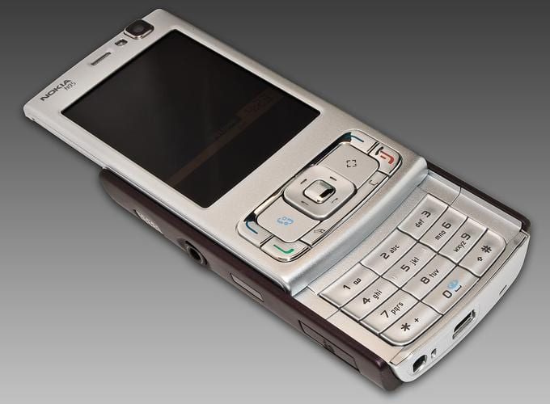

诺基亚 N95

2007 年上市的诺基亚 N95，以双向滑盖、500 万像素蔡司镜头、GPS 与 Wi-Fi 集于一身，是塞班时代的「多媒体电脑」巅峰。在 iPhone 问世的同一年，它代表了功能手机哲学的最高完成度，也是诺基亚王朝最后的辉煌。
客观评测
诺基亚 N95 于 2007 年 3 月前后在欧洲上市，运行 Symbian OS 9.2（S60 第三版），搭载 OMAP 2420（约 332MHz），配 2.8 英寸 QVGA 彩屏、500 万像素蔡司认证摄像头、GPS、Wi-Fi 802.11g 与双向滑盖设计，支持 microSD，BL-5F 电池约 950mAh，机身约 120 克。首发约 550 欧元，被定位为「多媒体电脑」。
主观点评
N95 是塞班王朝的落日辉煌。双向滑盖一推到底露出多媒体键的瞬间，整台手机变成随身影院；500 万像素蔡司镜头在 2007 年就是口袋里的卡片机，GPS 导航更让手机第一次真正取代 PND。它生不逢时——同年 iPhone 重新定义了交互，N95 却仍是按键逻辑的集大成者。收藏 N95 要挑滑轨紧实、排线完好的个体，8GB 黑色版与初版银色各有风味；它是功能手机拼到最后的一份满分答卷。
优点与不足
- 500 万像素蔡司镜头、GPS、Wi-Fi 齐备，2007 年配置天花板
- 双向滑盖设计巧妙，多媒体播放键仪式感十足
- S60 生态应用丰富，功能可玩性极强
- 塑料滑盖结构松动、排线故障是岁月通病
- Symbian 系统操作逻辑繁琐，学习成本不低
- BL-5F 电池续航偏弱，多媒体与导航掉电快
参数规格
| 上市时间 | 2007 年 3 月前后（欧洲） |
|---|---|
| 产品类型 | Symbian 智能手机（双向滑盖） |
| 操作系统 | Symbian OS 9.2，S60 第三版 |
| 处理器 | 德州仪器 OMAP 2420，约 332MHz |
| 内存 | 机身内存约 160MB（可用约百 MB 级） |
| 存储扩展 | microSD 卡扩展（最高数 GB） |
| 屏幕 | 2.8 英寸 TFT 彩屏 |
| 分辨率 | 240×320 像素（QVGA） |
| 色彩 | 1600 万色 |
| 主摄 | 500 万像素卡尔·蔡司认证镜头，自动对焦 |
| 视频拍摄 | 最高约 640×480 @30fps |
| 前置 | 约 30 万像素视频通话摄像头 |
| 导航 | 内置 GPS，支持 A-GPS 与地图导航 |
| 无线 | Wi-Fi 802.11g、蓝牙 2.0 |
| 接口 | miniUSB、3.5 毫米耳机孔、红外 |
| 电池 | BL-5F 可拆卸锂电池（约 950mAh） |